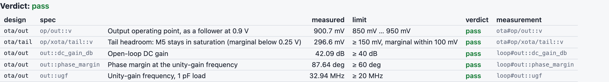
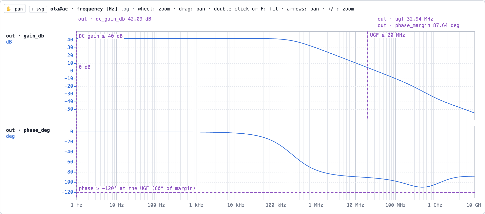
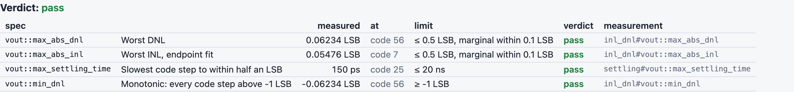
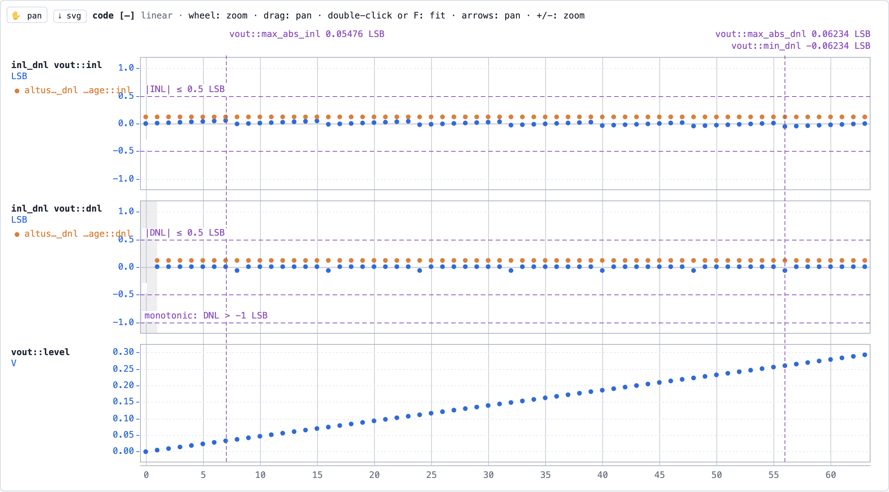
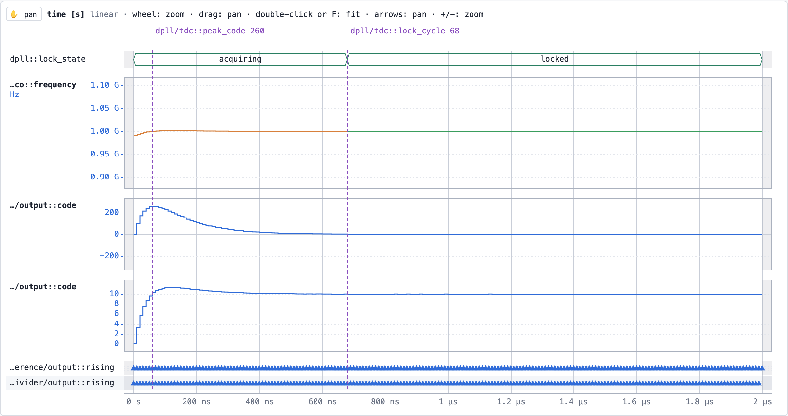
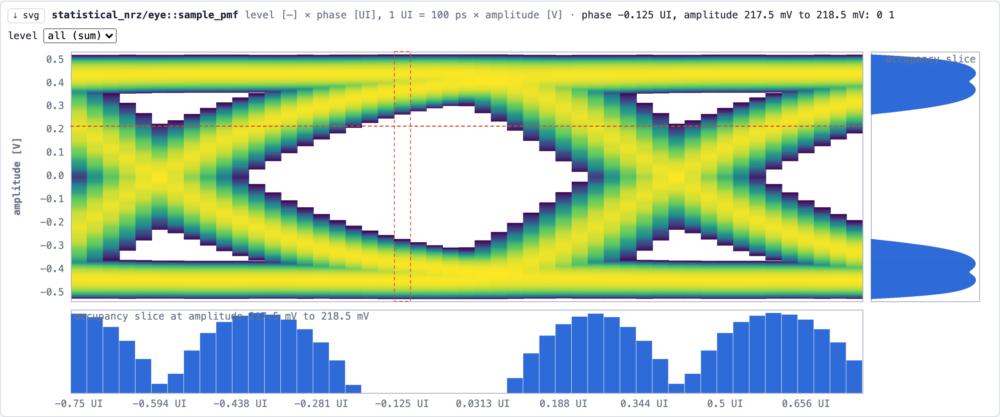
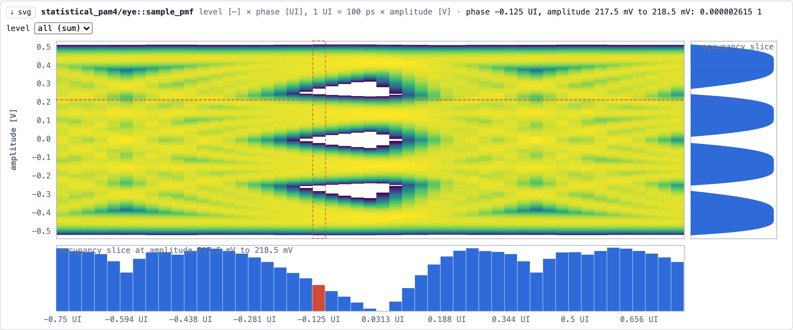
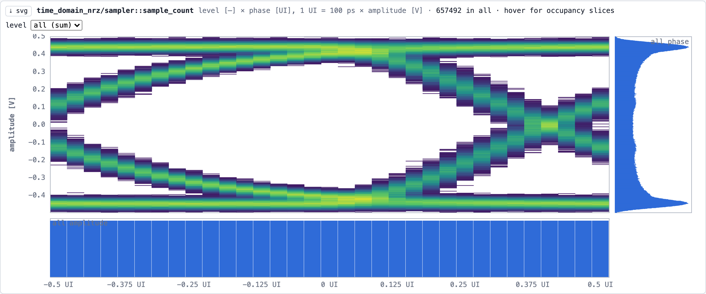

Jason Jacobs / features
Work in progress
Humans as flight directors
A human-directed, AI-driven IC design flow. The lead sets the mission and makes the go/no-go calls, domain experts verify their parts, and agents do the flying.
Every step is a tool call the flow records. That record of directed, inspected design work is how agents earn the trust that taping out a chip demands.
The flow
One tool per step, ending in a verdict
Each tool is a library with a small command-line wrapper, and each step reads and writes plain files. The build system ties them into one graph: a change reruns only what it affects, and nothing leaves the flow until a human signs off.
Demo · P-11
An OTA, from schematic to verdict
A five-transistor OTA with its bias mirror, drawn by Glyphica, netlisted by translators and simulated by ngspice (operating point and AC). Stratic stores the results, analyzers measure DC gain, unity-gain frequency and phase margin and check them against the spec, and Opticular draws the Bode plot with each limit on it.


What the flight director does
| Change | How | Verdict |
|---|---|---|
| None | — | pass |
| Load 5 pF instead of 1 pF | one testbench parameter | fail: UGF 6.6 MHz |
| Input pair narrowed from 4 µm to 1 µm | a two-line edit of the schematic | fail: DC gain 36.2 dB, UGF 16.5 MHz; tail headroom marginal |
Only what changed reruns. Changing the load reruns the simulation, the import, the measurement and the check; the netlist comes from the cache. Changing it back reruns nothing.
Nothing ships without a go. A passing build stops at the sign-off and waits for the lead's approval; a failing check keeps the export blocked.
Demo · P-12
A 6-bit DAC: ngspice against Altus
The same flow on a hierarchical design: a segmented 6-bit current-steering DAC, three unary bits through a thermometer decoder and three binary bits. ngspice ramps it through all 64 codes, analyzers measure INL, DNL and settling, and every build also runs Altus's behavioral model of the same DAC through the same ramp and the same measurements.


One hot cell, two simulators
One line of netlist config binds one MSB cell to a copy whose current source and cascode are 10% wider. No schematic is edited. The check fails where that cell turns on, and Altus, given the same error, predicts it.
| Build | ngspice max |DNL| | Altus max |DNL| | ngspice max |INL| | Altus max |INL| | Verdict |
|---|---|---|---|---|---|
| Default | 0.062 LSB | 0.000 LSB | 0.055 LSB | 0.000 LSB | pass |
| One hot MSB cell | 0.708 LSB, code 32 | 0.777 LSB, code 32 | 0.357 LSB | 0.389 LSB | fail |
The reference keeps the transistors honest, and the other way round. The remaining 0.07 LSB is the transistor DAC's own error at every MSB step, which the behavioral model doesn't have. The verdict is ngspice's; Altus is the cross-check.
Demo · P-7
Altus: a digital PLL locking
An Altus system model of a DPLL locking to a 100 MHz reference with a divide-by-10, recorded into Stratic and drawn by Opticular from a short workspace file. The DCO frequency is colored by the lock state, and the TDC's own measurements (peak code, lock cycle) appear as markers.

Demo · P-10
The statistical eye, checked in the time domain
Altus computes a SerDes link's statistical eye, a lossy channel into a CTLE at 10 GBd, from the link's composed response, with no time-domain run. It then checks the result against time-domain runs. At a BER of 1e-12 the NRZ eye is about 627 mV high and 0.69 UI wide.





Next
One small demo at a time
Each demo above is a prototype that proves one feature. They become live, read-only demos on this page as the tools settle: Opticular already draws from static exports and Glyphica draws plain SVG, so neither needs a server.